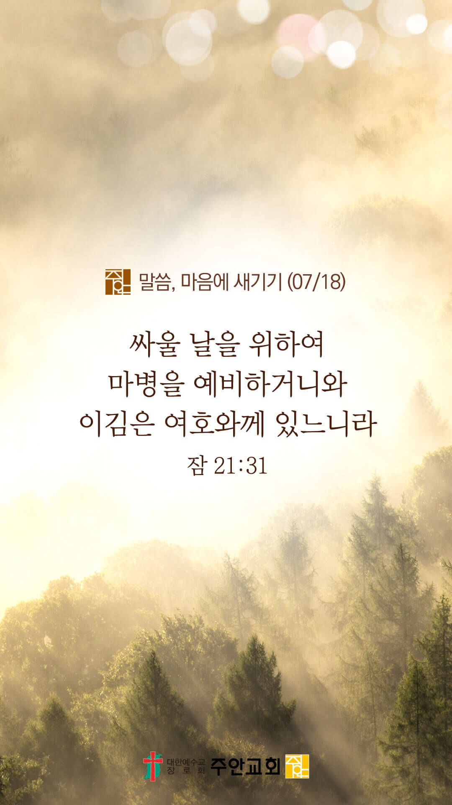

온라인 기도실 안내
2021년 07월18일(일)~07월 24일(토)
- 온라인 기도실은 온 회중이 함께 주님 앞으로 나아가는 자리입니다
- 30분 정도 여유를 가지고 하시기 바랍니다
- 말씀과 묵상, 찬양과 기도로 나아갑니다
- 배경 음악이 나올 수 있습니다 볼륨을 조절해주세요
준비가 되셨으면 아래의 버튼을 눌러주세요
할렐루야
내 영혼아 여호와를 찬양하라
시 146:1
- 가사를 묵상하며 읽습니다
내 아버지 그 품안에서
내 영혼은 안전합니다
주 손길로 내 삶을 안으시니
그 평강이 나를 덮습니다
나 비록 넘어지며 흔들리지만
주 내 안에 거하며 나를 붙드시니
할렐루야
내 영혼아 여호와를 찬양하라
시 146:1
- 가사를 묵상하며 읽습니다
내 생각을 주께로 돌리고
주시는 평강의 옷을 입습니다
주 약속 안에서 내 영혼 평안해
내 뜻보다 크신 주님의 계획 나 신뢰해
두려움 다 내려놓고 주님만 의지해
주 안에서 내영혼 안전합니다
할렐루야
내 영혼아 여호와를 찬양하라
시 146:1
내 영혼은 안전합니다 cover by Gina
위의 찬양이 끝나면 말씀읽기를 눌러주시면 됩니다
주의 말씀은 내 발에 등이요
내 길에 빛이니이다 (시119:105)
오늘의 말씀입니다
음악 소리가 크면 조절하시기 바랍니다

마음의 묵상
잠 21:31
“싸울 날을 위하여 마병을 예비하거니와 이김은 여호와께 있느니라”
1. 당신이 현재 싸우고 있는 영적 싸움은 무엇인가요?
2. 어떤 무기(마병)를 가지고 그 싸움에 임하고 계신가요?
3. 싸움의 승리는 여호와께 달려 있다는 것을 믿으시나요?
주님, 승리를 주소서
회개, 삶의 방향을 바꾸는 결정
하나님의 긍휼하심 안에 거하세요
“서로 친절하게 하며 불쌍히 여기며 서로 용서하기를 하나님이 그리스도 안에서 너희를 용서하심과 같이 하라”
- 에베소서 4:32 -
3분 정도 회개하며 주님 앞에 나아갑니다
사슴이 시냇물을 찾기에 갈급함 같이
시42:1
- 다음의 말씀을 소리 내어 읽습니다
[시편 146편 1-5절]
1 할렐루야 내 영혼아 여호와를 찬양하라
2 나의 생전에 여호와를 찬양하며 나의 평생에 내 하나님을 찬송하리로다
3 귀인들을 의지하지 말며 도울 힘이 없는 인생도 의지하지 말지니
사슴이 시냇물을 찾기에 갈급함 같이
시42:1
- 다음의 말씀을 소리 내어 읽습니다
[시편 146편 1-5절]
4 그의 호흡이 끊어지면 흙으로 돌아가서 그 날에 그의 생각이 소멸하리로다
5 야곱의 하나님을 자기의 도움으로 삼으며 여호와 자기 하나님에게 자기의 소망을 두는 자는 복이 있도다
하나님 나라
1. 하나님의 나라가 속히 이 땅에 임하게 하소서
하나님 아버지,
남아프리카 공화국의 폭동, 북미와 중동에서의 폭염, 중국과 일본에서의 폭우로 인해서 많은 사람들이 고통받고 있습니다.
고통 가운데 있는 나라와 민족을 위로하여 주시고, 하나님의 평안이 임하게 하소서.
간절한 마음으로 3분 정도 기도합시다
남과 북
2. 남북한이 속히 복음으로 통일되게 하소서
하나님 아버지,
북한에 퍼지고 있는 바이러스의 확산이 그치게 하소서. 북한 주민들을 지켜주시고 닫혀진 문이 열려서 북한 주민들에게 필요한
생필품과 의약품들이 잘 공급되고, 복음도 북한 전역에 들어가게 하소서.
간절한 마음으로 3분 정도 기도합시다
대한민국
3. 우리나라가 하나님을 경외하는 나라가 되게 하소서
하나님 아버지,
전 국민들이 한 마음이 되어 방역 수칙을 잘 지키고, 바이러스 확산이 그치게 하소서. 사회적 거리두기로 인해서 고통 받고 있는 소상공인들,
자영업자들, 취약 계층들을 보살펴주시고, 이들에게 일용할 양식을 베풀어주소서.
간절한 마음으로 3분 정도 기도합시다
한국교회
4. 한국교회가 성령으로 새롭게 부흥되게 하소서
하나님 아버지,
모두가 고통의 시간을 보내고 있는 이 때, 한국교회가 하나님께 보냄 받은 선교적 역할과 사명을 기억하게 하소서. 한국 교회가 세상을 위해서 기도하고,
절망에 빠진 이웃들에게 다가가 하나님의 사랑을 전하며, 세상의 소망이 되게 하소서.
간절한 마음으로 3분 정도 기도합시다
주안교회
5. 주안교회가 다음 세대를 세우는 선교적 교회가 되게 하소서
하나님 아버지,
주안의 모든 성도들이 선하고 지혜로운 청지기가 되어 아버지께서 우리에게 맡겨주신 모든 것들을 잘 관리하게 하소서.
특별히 이 세상에서 살아가는 데 필요한 재물의 복을 받게 하시고, 받은 바 그 재물로 사람들을 구제하고 유익하게 할 뿐만 아니라,
궁극적으로 그들의 영혼을 구하는데 잘 사용하게 하소서.
간절한 마음으로 3분 정도 기도합시다
감사의 기도
- 오늘 기도를 인도하신 주님께 감사를 올려드립니다
- 아래의 구절을 읽고 주님께 감사의 마음을 올려드립시다
“기도를 계속하고
기도에 감사함으로 깨어 있으라”
- 골로새서 4장 2절 -
고요한 가운데 잠시 침묵하시기 바랍니다
파송, 세상을 향하여
- 오늘의 온라인 기도를 마쳤습니다
기도를 들으신 주님께서 평안히 가라 하십니다
주님께서 우리와 함께 하시니 두려울 것이 없습니다
새벽을 깨우며
- 새벽기도회 안내입니다